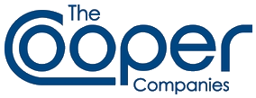

The Cooper Companies
The Cooper Companies는 미국 샌라몬에 본사를 둔 글로벌 의료기기 회사이다. 콘택트렌즈와 여성 건강용 의료기기, 난임·유전체 제품을 두 사업부를 통해 다룬다.
최종 업데이트

The Cooper Companies는 어떤 브랜드인가
이 회사는 CooperVision과 CooperSurgical이라는 두 사업부로 구성된 의료기기 기업이다. CooperVision은 콘택트렌즈 착용자와 안과 진료 종사자를 대상으로 여러 교체 주기와 시력 조건에 맞춘 렌즈를 공급한다.
CooperSurgical은 여성 건강과 난임 분야에 초점을 두고 의료기기와 난임·유전체 제품을 제조한다. 회사는 과거 여러 의료 사업 그룹과 제약 사업부를 운영했으나 현재는 두 핵심 사업부 중심으로 재편한 상태이다.
미국에 본사를 두고 세계 시장에서 시력 관리와 여성 건강 관련 사업을 운영한다.
The Cooper Companies는 어떻게 시작되고 성장했나
Parker Montgomery는 1958년 Martin H. Smith Co.를 인수했다.
회사는 1961년 Cooper, Tinsley Laboratories, Inc., 1967년 Cooper Laboratories Inc.로 이름을 바꾸었으며 1972년 영국 렌즈 제조사 GlobalVision을 인수해 콘택트렌즈 사업에 진출했다. 1980년에는 CooperVision, CooperCare, CooperBiomedical의 세 사업 그룹으로 재편했고 이듬해 Cooper Medical Devices Corp.를 추가했다.
1987년 현재의 회사명으로 변경했으며 1990년 CooperVision, CooperSurgical, CooperVision Pharmaceuticals의 세 사업부로 다시 재편했다.
The Cooper Companies의 브랜드 아이덴티티는 무엇인가
시력 관리용 콘택트렌즈와 여성 건강·난임·유전체 의료기기를 서로 다른 두 사업부에서 함께 운영하는 구조가 구분점이다.
The Cooper Companies의 대표 제품과 서비스는 무엇인가
CooperVision은 일일, 2주, 월간 교체형 콘택트렌즈를 제조한다. 또한 난시, 근시, 원시와 노안을 위한 구면, 토릭, 다초점 렌즈를 제공하며 콘택트렌즈 착용자와 안과 진료 종사자를 대상으로 사업을 운영한다.
CooperSurgical은 여성 건강용 의료기기와 난임·유전체 제품을 담당하며 여성 건강과 난임에 초점을 둔다. 회사의 사업 구성은 시력 관리 제품을 맡는 CooperVision과 의료기기 및 생식 건강 제품을 맡는 CooperSurgical로 구분한다.
The Cooper Companies는 지금 어떤 상태인가
현재 회사는 CooperVision과 CooperSurgical의 두 사업부로 운영하며 본사는 미국 샌라몬에 둔다. CooperSurgical은 코네티컷주 트럼불에 본사를 두며 2021년 AEGEA Medical, Safe Obstetric Systems, Generate Life Sciences를 인수했다.
2022년에는 Cook Medical의 생식 건강 사업과 각막교정·공막 콘택트렌즈 공급사 EnsEyers를 인수했다.
The Cooper Companies 로고는 어떻게 변해왔나
자주 묻는 질문
The Cooper Companies는 어느 나라 브랜드인가요?
The Cooper Companies는 미국의 헬스·제약 브랜드입니다.
The Cooper Companies는 언제 설립되었나요?
The Cooper Companies는 1958년 설립되었습니다.
The Cooper Companies의 브랜드 아이덴티티는 무엇인가요?
시력 관리용 콘택트렌즈와 여성 건강·난임·유전체 의료기기를 서로 다른 두 사업부에서 함께 운영하는 구조가 구분점이다.
The Cooper Companies의 대표 제품은 무엇인가요?
CooperVision은 일일, 2주, 월간 교체형 콘택트렌즈를 제조한다.
The Cooper Companies는 현재 어떤 상태인가요?
현재 회사는 CooperVision과 CooperSurgical의 두 사업부로 운영하며 본사는 미국 샌라몬에 둔다.
The Cooper Companies의 본사는 어디에 있나요?
The Cooper Companies의 본사는 샌라몬에 있습니다(위키데이터 기준).
The Cooper Companies의 공식 웹사이트는 어디인가요?
The Cooper Companies의 공식 웹사이트는 http://www.coopercos.com 입니다.
출처와 검증
The Cooper Companies 관련 참고: 공식 웹사이트 · 위키데이터 Q1129792 · 영어 위키백과. 브랜드명은 한글과 원어를 함께 표기하되 데이터에 없는 표기는 만들지 않습니다. 기원 국가·설립연도는 검수된 정의문에서 확인된 값을 우선하고, 없을 때만 공식 웹사이트 URL이 일치하는 위키데이터 개체의 값을 씁니다. 위키데이터 값은 2026-09-12 기준입니다.